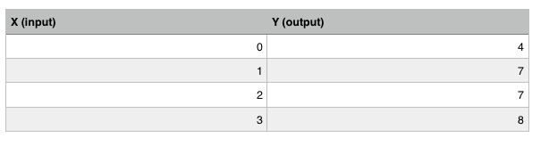

I took Andrew Ng's Machine Learning course on Coursera a while back so I thought I'd share the notes I took here.
Linear Regression
Linear Regression is a supervised learning algorithm that takes input variables and tries to map the output to a continuous expected result function.
Linear Regression with one variable is also known as univariate linear regression which we'll use in this example to keep things simple. Univariate linear regression is used when we want to predict a single output value from a single input value.
The Hypothesis Function:
hθ(x) = θ0 + θ1x
We plug in values for θ0 and θ1 to get output value y. We are trying to create a function that will accurately map our input data(x) to the output data(y).
We can make random guesses for θ0 and θ1.
If θ0 = 3 and θ1. = 6 then the hypothesis function becomes:
hθ(x) = 3 + 6x
If our input x = 2 then our output y = 15 which is off by 8.
The Cost Function:
To measure the accuracy of the hypothesis function we use a cost function. It takes an average of all the results of the hypothesis with inputs from x and compares it to the actual output y.
J(θ0, θ1) = $\frac{1}{2m} \sum_{i=1}^m$ (hθ(xi) - yi)$^2$
The above function is called the "Squared Error Function."
m is the size of our training data.
hθ(xi) is our guess.
yi is the acutal label.
Gradient Descent
Now that we have our hypothesis function and a way to measure how accurate it is, we need a way to automatically improve our hypothesis function. This is the Gradient Descent Equation:
θj := θj - α $\frac{∂}{∂θ_j}$ J(θ0,θ1)
for j = 0 and j = 1
This can be thought of as: Repeat until convergence:
θj := θj - α [Slope of line Tangent]
α is called the "learning rate" which controls how big of a step we take with gradient descent.
Now we can substitute the cost function into the gradient descent equation to get:
θ0 := θ0 - α $\frac{1}{m} \sum_{i=1}^m$ (hθ(xi) - yi)
θ1 := θ1 - α $\frac{1}{m} \sum_{i=1}^m$ (hθ(xi) - yi)
which we reapeat until convergence.
Remember our hypothesis function:
hθ(x) = θ0 + θ1x
is a linear function of x. So we can choose values for our parameters θ0 and θ1 to find a line that best fits our data. In other words, choose θ0 and θ1 such that hθ(x) is close as possible to the actual label y.
The goal is to find values for our parameters θ0 and θ1 so that our cost function is minimized.
Minimize θ0, θ1
J(θ0, θ1) = $\frac{1}{2m} \sum_{i=1}^m$ (hθ(xi) - yi)$^2$
I'm working on re-drawing some of the graphs I had which will be up soon!